Observamos la evolución en los tres principales sectores económicos, primario, secundario y terciario.
trabajo BigData
Autor
Carla Morgado (morcon@alumni.uv.es)
Fecha de Publicación
1 de noviembre de 2022
1.INTRODUCCIÓN
Motivación
Para la asignatura de “Programación y manejo de datos en la era del Big Data” debía realizar un trabajo individual para poder mostrar todas y cada una de las habilidades adquiridas con R Studio a lo largo del curso.
Yo personalmente he decidido realizar mi trabajo individual acerca de la evolución de los 3 sectores económicos (primario, secundario y terciario). He decidido que sería un tema interesante para analizar y que no me resultaría muy complicado encontrar datos puesto que creo que existen una gran cantidad en cuanto a este tema.
Los tres sectores económicos son el sector primario, secundario y terciario. El sector primario incluye a las actividades económicas relacionadas con la extracción y producción de recursos naturales, como la agricultura, la pesca y la minería. El sector secundario incluye a las actividades económicas relacionadas con la transformación de los productos del sector primario en bienes manufacturados, como la industria manufacturera y la construcción. Y por último, el sector terciario incluye a las actividades económicas relacionadas con el comercio y los servicios, como el transporte, la financiación y la atención médica.
A lo largo de la historia, la economía de muchos países ha pasado de ser predominantemente agrícola y primaria a ser más industrial y secundaria. En la actualidad, en muchos países desarrollados, el sector terciario es el más grande e importante, ya que proporciona la mayor parte del empleo y el producto interno bruto (PIB). Sin embargo, en algunos países en desarrollo, el sector primario todavía es importante y puede ser el principal motor de crecimiento económico.
Datos
En mi caso, la búsqueda de los datos ha sido más sencilla de lo esperado. Como he comentado anteriormente creo que el tema escogido para mi trabajo tiene una gran cantidad de datos de todo tipo y es capaz de enfocarse de mil formas. Los datos son principalmente del Banco Mundial, no solo porque he encontrado muchos datos, si no por que además, en mi trabajo de equipo , “El papel de la mujer en la escuela y el trabajo”, escogimos muchos datos del banco mundial.
Pasamos a mostrar mi trabajo.
2.SECTOR PRIMARIO
El sector primario es una parte importante de la economía de muchos países y se refiere a las actividades económicas relacionadas con la producción y extracción de recursos naturales. Estos incluyen la agricultura, la pesca y la minería. Aunque yo, personalmente, me he centrado puesto que me parecía más interesante, en la agricultura.
En primer lugar, he querido remarcar la evolución de la ocupación en la Agricultura. Para ello he escogido 4 países, entre los que destacan China, Argentina, Brasil y por supuesto España. Para representarlo, he usado para cada uno de estos países , un gráfico de barras por años, es decir, segun el transcurso de los años, cuanta población se dedicaba a la agricultura.
Me parecía interesante la elección de estos países puesto que, la agricultura en China, Brasil, Argentina y España ha evolucionado de manera diferente a lo largo de la historia, adaptándose a las condiciones climáticas, sociales y económicas de cada país.
Como podemos observar, en el Grafico 1, España no es uno de los países con mayor porcentaje de ocupados en agricultura, además de destacar su significativa evolución, puesto que este ha pasado de un 10% en 1990 a un 4% en 2015.
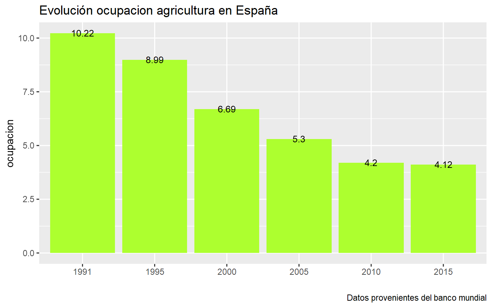
En cuanto a este segundo gráfico, China es uno de los países más característicos en el sector primario, y aunque en China la población que se dedicaba a la agricultura no ha hecho más que disminuir, este es uno de los países con mayor ocupación en agricultura. En 1990 un 60% de la población.
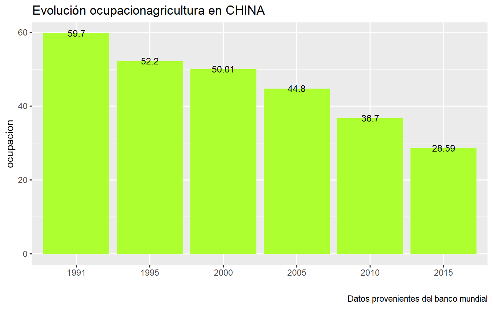
Argentina, es de los 4 países elegidos, con diferencia el país con menor porcentaje de población que se dedica al sector primario, en concreto a la agricultura. Como podemos observar, este se encontraba muy por debajo en 1990, con un 0,34% de la población y aunque cabe destacar como entre 2005-2010 este aumento a un 1,2% con el paso del tiempo ha vuelto a disminuir.
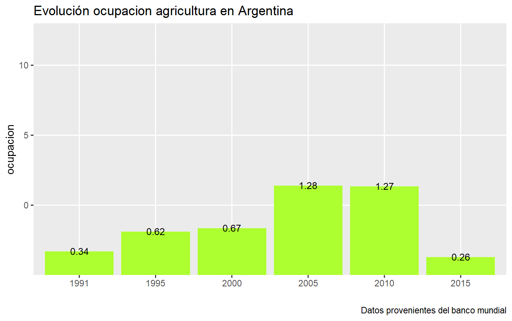
Brasil, un país que destaca en agricultura por ser una actividad importante desde la época colonial, cuando se comenzó a cultivar productos para la exportación como el azúcar, el café y el tabaco. Aunque se encuentra de los 4 países, el segundo con mayor porcentaje también ha descendido notablemente, pasando de un porcentaje de 19% en 1990 a un 10% en 2015.
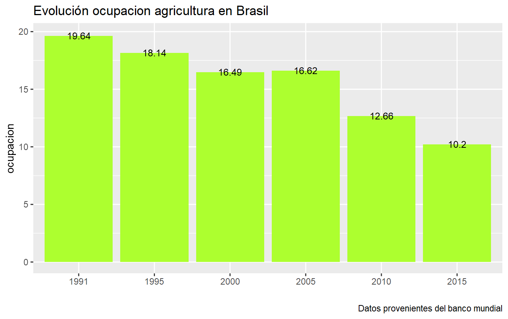
Por último, me parecía interesante plasmar un gráfico de los 4 países para ver más claramente las diferencias entre ellos. Como he comentado se observa China como primero en la fila, en segundo lugar, brasil, en tercer lugar, España y por último Argentina.
En esta tabla he querido plasmar los 10 principales países exportadores del mundo en el sector de la Agricultura. Se observa como primero Benin, en segundo lugar Kenya…, es decir países Africanos, pudiendo afirmar que, en general la agricultura sigue siendo una actividad importante en muchos países de África. En muchas regiones del continente, la agricultura sigue siendo la principal fuente de empleo y de ingresos para las comunidades rurales, y es una actividad vital para la seguridad alimentaria de los países africanos.
date
value
country
2021
74.881
Benin
2021
14.760
Kenya
2021
14.208
Congo, Rep.
2021
14.049
Tajikistan
2021
12.907
Latvia
2021
12.734
Uruguay
2021
11.590
New Zealand
2021
10.466
Fiji
2021
10.313
Lao PDR
2021
9.963
Ethiopia
En esta tabla he querido plasmar los 10 principales países importadores del mundo en el sector de la Agricultura. Se observa como primero Lao, en segundo lugar, Pakistan…, es decir países Asiáticos, pudiendo afirmar que, los países asiáticos son importantes importadores de productos agrícolas a nivel internacional.
date
value
country
2021
5.978
Lao PDR
2021
5.184
Pakistan
2021
3.984
Estonia
2021
3.967
Latvia
2021
3.312
Samoa
2021
2.923
Vietnam
2021
2.742
Lithuania
2021
2.716
Tajikistan
2021
2.658
China
2021
2.646
Indonesia
3.SECTOR SECUNDARIO
El sector secundario, también conocido como la industria, es una parte importante de la economía de cualquier país. Se encarga de la producción de bienes manufacturados y suele ser una fuente importante de empleo y crecimiento económico. A lo largo de la historia, el sector secundario ha experimentado una serie de cambios y evoluciones que han tenido un impacto significativo en la forma en que se producen y consumen bienes.
En este apartado he escogido países como Polonia, Alemania, Francia , Italia y España para remarcar cual de estos países es el que tiene mayor ocupación en la industria y cuál es el menor. He realizado un gráfico de barras ordenado para así proceder a examinar correctamente los datos. Como podemos observar, es Polonia el país con mayor ocupación en industria seguido de Alemania, además de destacar que es Francia y España los países en el último puesto.
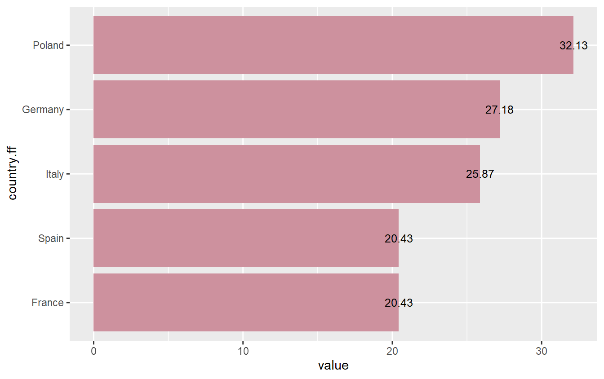
date
value
country
_
2019
20.43
France
2019
27.18
Germany
2019
25.87
Italy
2019
32.13
Poland
2019
20.43
Spain
4.SECTOR TERCIARIO
El sector terciario, también conocido como el sector de servicios, es una parte importante de la economía de cualquier país. Se encarga de la prestación de servicios a las empresas y a los consumidores y suele ser una fuente importante de empleo y crecimiento económico.
OCUPACION EN LOS SERVICIOS
En este mapa, he querido plasmar cuales son los países del mundo que se caracterizan por una mayor ocupación en el sector servicios. He dividido los datos en 4 partes, de manera que son los países que pertenecen al 4 grupo y de color amarillo los que disponen de una mayor ocupación en el sector servicios, mientras que los que pertenecen al grupo 1 y de color azul muy oscuro los que disponen de una menor ocupación en el sector servicios.
El turismo es una actividad económica que se basa en la prestación de servicios a personas que viajan a lugares diferentes al de su residencia habitual. En el próximo gráfico se observa la evolución del turismo para 4 países (Alemania,Italia,Francia y España). Es un gráfico en el que podemos observar cómo ha evolucionado a lo largo del tiempo, destacando como se observa una clara diferencia en el año 2020 tras la crisis del covid.
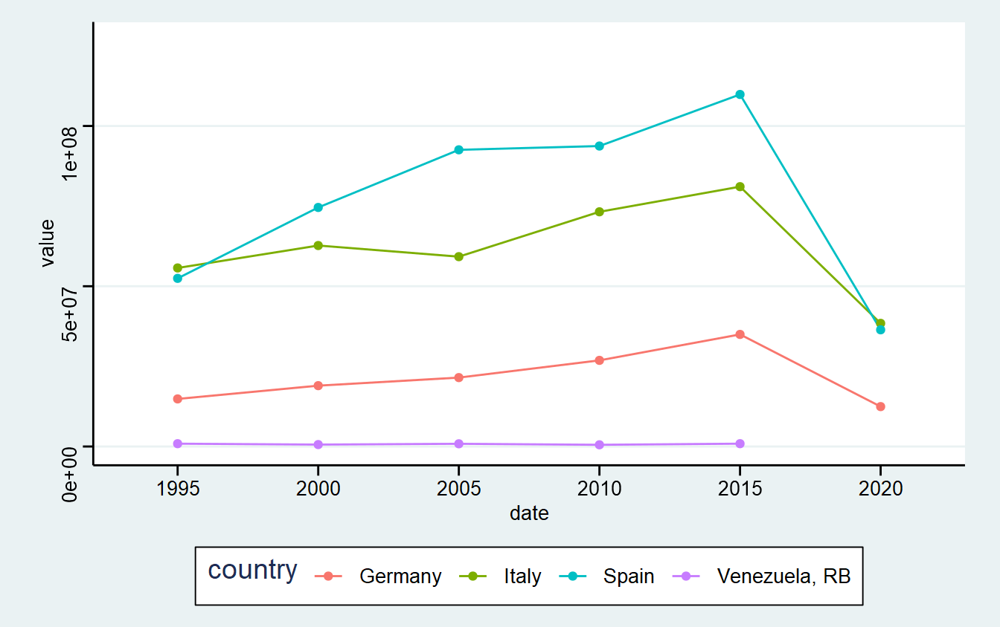
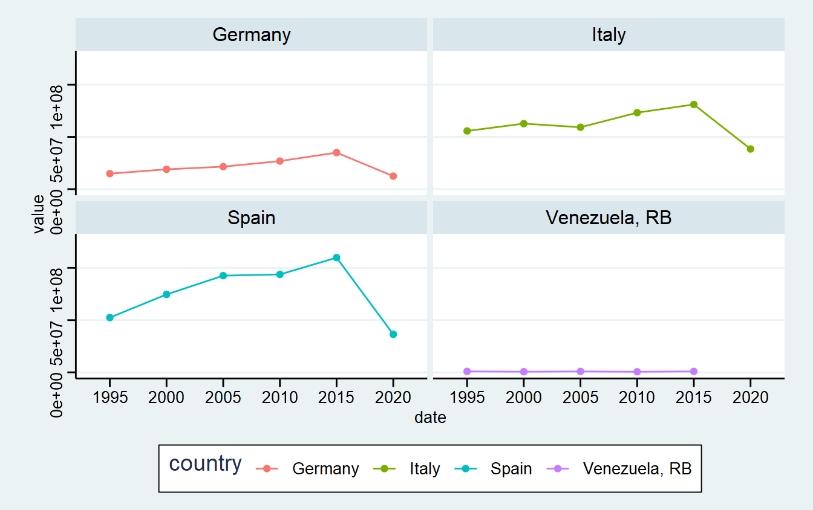
5. POR SECTORES
Por último, he utilizado gráficos circulares y he seleccionado estos 4 paises, (España, Gran Bretaña, Alemania y China), que me parecían interesantes analizar para el año 2021.
En España la mayor parte de la distribucion sectorial del PIB pertenece al sector servicios.
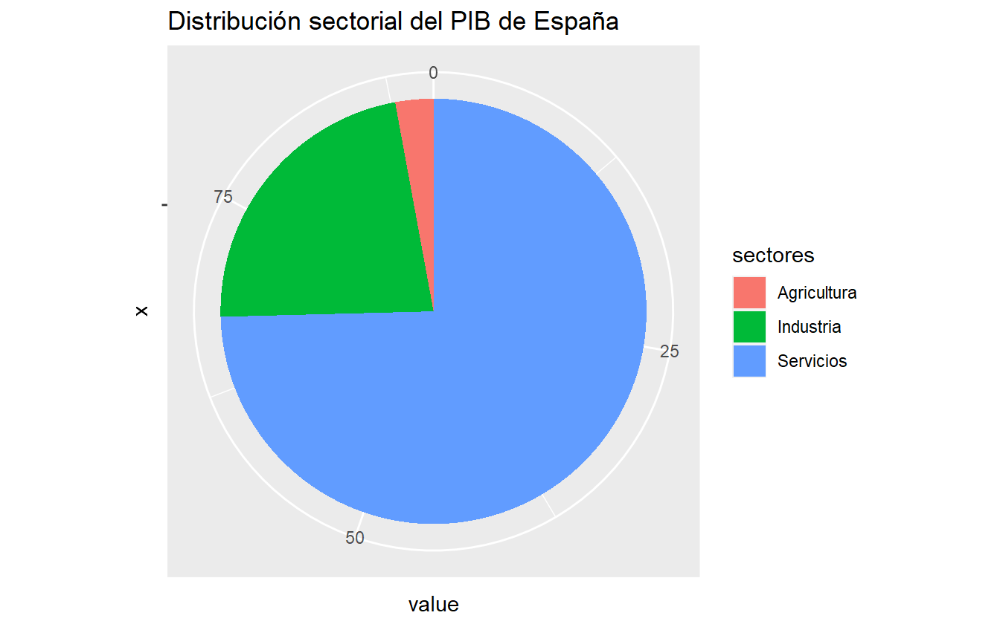
Alemania, aunque la mayor parte, como en el caso de España, pertenece al sector servicios, ya hay un porcentaje un poco más alto que pertenece a la industria.
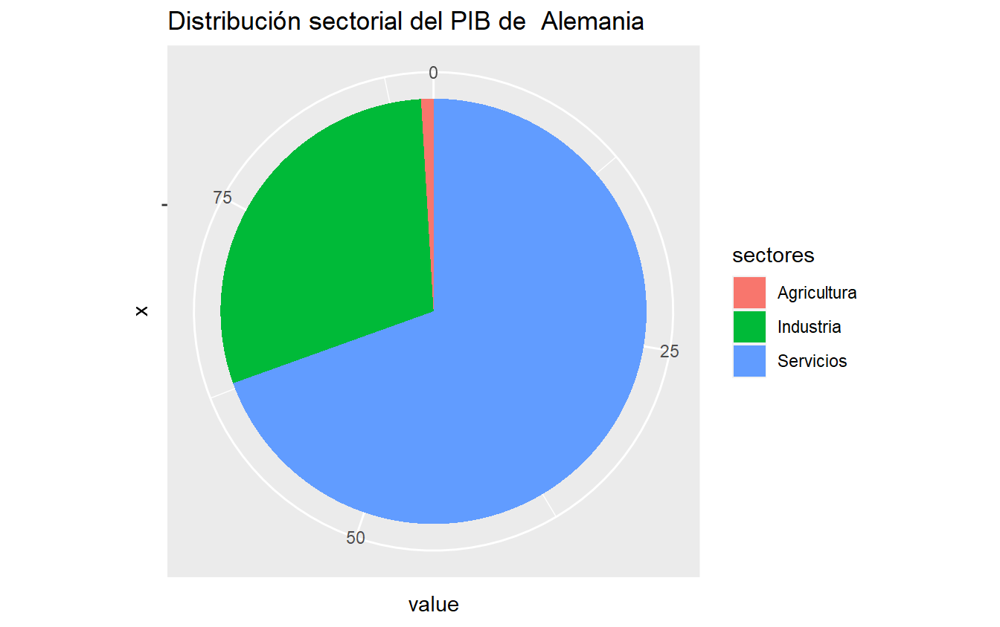
Gran Bretaña, destaca por ser de los 4 países el que más atención presta al sector servicios, teniendo este una distribución de más del doble del PIB.
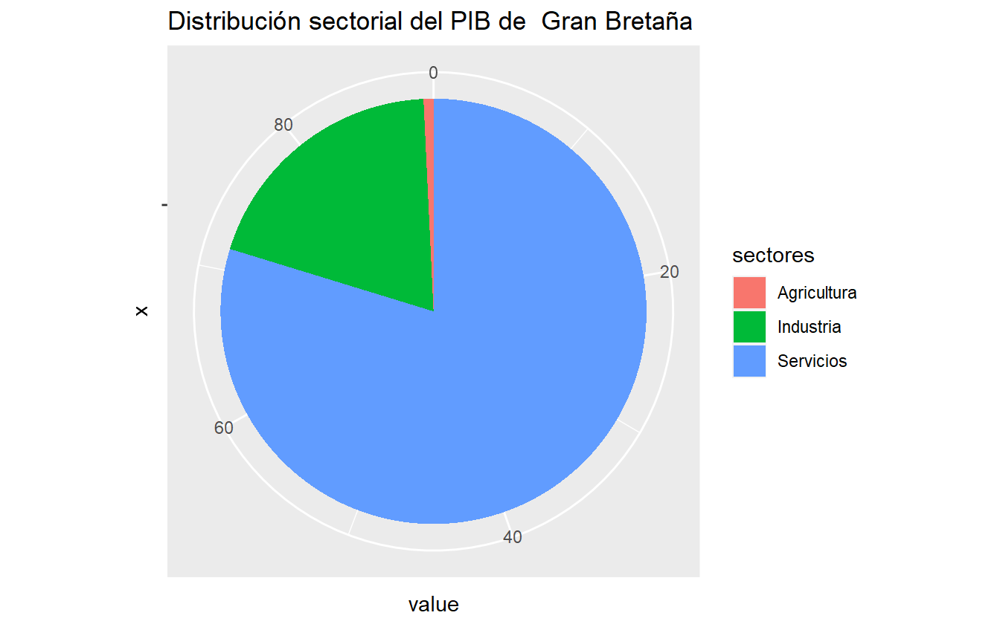
Por último, China, es el país en el que más repartidos se encuentran los sectores. Aunque no se caracteriza por tener un alto porcentaje en agricultura, es el país de los 4 que más atención le presta al sector de la Agricultura.
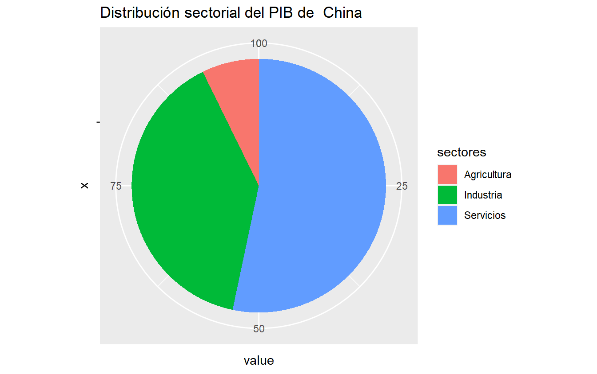
6. CONCLUSIÓN
La evolución de los sectores económicos ha sido un proceso continuo a lo largo de la historia de la humanidad.
En general, se puede decir que la evolución de los sectores económicos ha estado marcada por una mayor diversificación y especialización a medida que la tecnología y la producción han avanzado con el paso del tiempo, permitiendo a las empresas y trabajadores especializarse en una tarea o un producto en particular, lo que a su vez ha llevado a una mayor eficiencia y productividad.
Una vez desarollado todo el trabajo, cabe destacar como la agricultura ha perdido mucho peso en la gran mayoria de los paises reduciendose la ocupacion en este sector en la mitad de los trabajadores.
La industria, aunque actualmente sigue teniendo un peso importante, con el paso del tiempo ha ido disminuyendo mas lentamente pero disminuyendo la ocupación en este sector.
Por último, destacar que el sector terciario, es el sector actualmente más destacado en practicamente la mayoria de las economías.
---title: "LA EVOLUCIÓN DE LOS SECTORES ECONÓMICOS"description: | Observamos la evolución en los tres principales sectores económicos, primario, secundario y terciario.author: Carla Morgado (morcon@alumni.uv.es) date: 2022-11-01 #--categories: [trabajo BigData] image: "./imagenes/imagen_01.png"title-block-banner: true #- {true, false, "green","#AA0000"}title-block-banner-color: "skyblue" #-"#FFFFFF" toc: truetoc-location: lefttoc-depth: 3smooth-scroll: trueformat: html: #backgroundcolor: "#F1F3F4" #standalone: true link-external-newwindow: true #css: ./assets/my_css_file.css #- CUIDADO!!!!code-tools: truecode-link: true---<style> body {background-color: skyblue; }</style>```{r setup, include=FALSE}knitr::opts_chunk$set(echo =TRUE, eval =TRUE, message =FALSE, warning =FALSE, #results = "hold",cache =FALSE, cache.path ="/caches/", comment ="#>",#fig.width = 7, #fig.height= 7, #out.width = 7, out.height = 7,collapse =TRUE, fig.show ="hold",fig.asp =0.628, out.width ="75%", fig.align ="center")knitr::opts_chunk$set(dev ="png", dev.args =list(type ="cairo-png"))``````{r, echo = FALSE, message = FALSE, warning = FALSE}library(prettydoc)library(tidyverse)library(wbstats)library(ggplot2)library(gganimate)library(rnaturalearth)library(rnaturalearthdata)library(wordcloud2)library(gt)library(ggthemes)library(WDI)library(gridExtra)```<br># **1.INTRODUCCIÓN**## **Motivación**Para la asignatura de “Programación y manejo de datos en la era del Big Data” debía realizar un trabajo individual para poder mostrar todas y cada una de las habilidades adquiridas con R Studio a lo largo del curso. Yo personalmente he decidido realizar mi trabajo individual acerca de la evolución de los 3 sectores económicos (primario, secundario y terciario).He decidido que sería un tema interesante para analizar y que no me resultaría muy complicado encontrar datos puesto que creo que existen una gran cantidad en cuanto a este tema. Los tres sectores económicos son el sector primario, secundario y terciario. El sector primario incluye a las actividades económicas relacionadas con la extracción y producción de recursos naturales, como la agricultura, la pesca y la minería. El sector secundario incluye a las actividades económicas relacionadas con la transformación de los productos del sector primario en bienes manufacturados, como la industria manufacturera y la construcción. Y por último, el sector terciario incluye a las actividades económicas relacionadas con el comercio y los servicios, como el transporte, la financiación y la atención médica.A lo largo de la historia, la economía de muchos países ha pasado de ser predominantemente agrícola y primaria a ser más industrial y secundaria. En la actualidad, en muchos países desarrollados, el sector terciario es el más grande e importante, ya que proporciona la mayor parte del empleo y el producto interno bruto (PIB). Sin embargo, en algunos países en desarrollo, el sector primario todavía es importante y puede ser el principal motor de crecimiento económico.## **Datos**En mi caso, la búsqueda de los datos ha sido más sencilla de lo esperado. Como he comentado anteriormente creo que el tema escogido para mi trabajo tiene una gran cantidad de datos de todo tipo y es capaz de enfocarse de mil formas. Los datos son principalmente del Banco Mundial, no solo porque he encontrado muchos datos, si no por que además, en mi trabajo de equipo , "El papel de la mujer en la escuela y el trabajo", escogimos muchos datos del banco mundial.Pasamos a mostrar mi trabajo.```{r, eval = TRUE, echo = FALSE}knitr::include_graphics(here::here("imagenes", "banco_mundial.png"))```# **2.SECTOR PRIMARIO**El sector primario es una parte importante de la economía de muchos países y se refiere a las actividades económicas relacionadas con la producción y extracción de recursos naturales. Estos incluyen la agricultura, la pesca y la minería.Aunque yo, personalmente, me he centrado puesto que me parecía más interesante, en la agricultura.En primer lugar, he querido remarcar la evolución de la ocupación en la Agricultura. Para ello he escogido 4 países, entre los que destacan China, Argentina, Brasil y por supuesto España.Para representarlo, he usado para cada uno de estos países , un gráfico de barras por años, es decir, segun el transcurso de los años, cuanta población se dedicaba a la agricultura. Me parecía interesante la elección de estos países puesto que, la agricultura en China, Brasil, Argentina y España ha evolucionado de manera diferente a lo largo de la historia, adaptándose a las condiciones climáticas, sociales y económicas de cada país.## **OCUPACIÓN EN LA AGRICULTURA** {.tabset .tabset-pills}::: {.panel-tabset}### GRAFICO 1 ESPAÑAComo podemos observar, en el Grafico 1, España no es uno de los países con mayor porcentaje de ocupados en agricultura, además de destacar su significativa evolución, puesto que este ha pasado de un 10% en 1990 a un 4% en 2015.```{r, echo = FALSE, message = FALSE, warning = FALSE, fig.align = "center"} agricultura<-wb(indicator =c("SL.AGR.EMPL.ZS"))paises <-c("Spain")df_esp <- agricultura %>%filter(country %in% paises) %>%select(iso3c,date,value,country)df_esp$value <-round(df_esp$value, digits=2)agri <-ggplot(data = df_esp, aes(x = date, y = value)) +geom_col(fill ="greenyellow") +labs(title ="Evolución ocupacion agricultura en España",caption ="Datos provenientes del banco mundial",x ="",y ="ocupacion") +scale_x_discrete(limits =c("1991","1995", "2000", "2005", "2010", "2015")) +geom_text(aes(label = value, y = value), size =3.25) agri +geom_smooth(color ="black") ```### GRÁFICO 2 CHINAEn cuanto a este segundo gráfico, China es uno de los países más característicos en el sector primario, y aunque en China la población que se dedicaba a la agricultura no ha hecho más que disminuir, este es uno de los países con mayor ocupación en agricultura. En 1990 un 60% de la población.```{r, echo = FALSE, message = FALSE, warning = FALSE, fig.align = "center"} agricultura<-wb(indicator =c("SL.AGR.EMPL.ZS"))paises <-c("China")df_china <- agricultura %>%filter(country %in% paises) %>%select(iso3c,date,value,country) df_china$value <-round(df_china$value, digits=2)agri <-ggplot(data = df_china, aes(x = date, y = value)) +geom_col(fill ="greenyellow") +labs(title ="Evolución ocupacionagricultura en CHINA",caption ="Datos provenientes del banco mundial",x ="",y ="ocupacion") +scale_x_discrete(limits =c("1991","1995", "2000", "2005", "2010", "2015"))agri +geom_smooth(color ="black") +geom_text(aes(label = value, y = value), size =3.25)```### GRÁFICO 3 ARGENTINAArgentina, es de los 4 países elegidos, con diferencia el país con menor porcentaje de población que se dedica al sector primario, en concreto a la agricultura.Como podemos observar, este se encontraba muy por debajo en 1990, con un 0,34% de la población y aunque cabe destacar como entre 2005-2010 este aumento a un 1,2% con el paso del tiempo ha vuelto a disminuir.```{r, echo = FALSE, message = FALSE, warning = FALSE, fig.align = "center"} agricultura<-wb(indicator =c("SL.AGR.EMPL.ZS"))paises <-c("Argentina")df_arg <- agricultura %>%filter(country %in% paises) %>%select(iso3c,date,value,country)df_arg$value <-round(df_arg$value, digits=2)agri <-ggplot(data = df_arg, aes(x = date, y = value)) +geom_col(fill ="greenyellow") +labs(title ="Evolución ocupacion agricultura en Argentina",caption ="Datos provenientes del banco mundial",x ="",y ="ocupacion") +scale_x_discrete(limits =c("1991","1995", "2000", "2005", "2010", "2015")) +scale_y_discrete(limits =c("0","5","10")) +geom_text(aes(label = value, y = value), size =3.25) agri +geom_smooth(color ="black")```### GRÁFICO 4 BRASILBrasil, un país que destaca en agricultura por ser una actividad importante desde la época colonial, cuando se comenzó a cultivar productos para la exportación como el azúcar, el café y el tabaco. Aunque se encuentra de los 4 países, el segundo con mayor porcentaje también ha descendido notablemente, pasando de un porcentaje de 19% en 1990 a un 10% en 2015.```{r, echo = FALSE, message = FALSE, warning = FALSE, fig.align = "center"} paises <-c("Brazil")df_brasil <- agricultura %>%filter(country %in% paises) %>%select(iso3c,date,value,country)df_brasil$value <-round(df_brasil$value, digits=2)agri <-ggplot(data = df_brasil, aes(x = date, y = value)) +geom_col(fill ="greenyellow") +labs(title ="Evolución ocupacion agricultura en Brasil", caption ="Datos provenientes del banco mundial",x ="",y ="ocupacion") +scale_x_discrete(limits =c("1991","1995", "2000", "2005", "2010", "2015")) +geom_text(aes(label = value, y = value), size =3.25) agri +geom_smooth(color ="black") ```### POR PAISESPor último, me parecía interesante plasmar un gráfico de los 4 países para ver más claramente las diferencias entre ellos.Como he comentado se observa China como primero en la fila, en segundo lugar, brasil, en tercer lugar, España y por último Argentina.```{r, echo = FALSE, message = FALSE, warning = FALSE, fig.align = "center"} paises <-c("Spain", "China", "Argentina", "Brazil")df_paises <- agricultura %>%filter(country %in% paises)df_small <- df_paises %>%filter(date %in%c(1991, 2000, 2005, 2010,2015))por_paises <-ggplot(df_small, aes(x = date ,y = value)) +geom_point() +geom_line(aes(group = country)) +theme(panel.background =element_rect(fill ="aquamarine",colour ="white"), plot.background =element_rect(fill ="pink1",colour ="bisque")) +labs(title ="OCUPACION EN AGRICULTURA EN DISTINTOS PAISES", "Fecha", y ="valor") +theme(panel.background =element_rect(fill ="antiquewhite")) +facet_wrap(~country) por_paises```:::## **COMERCIO EN LA AGRICULTURA** {.tabset .tabset-pills}::: {.panel-tabset}### TABLA EXPORTACIONESEn esta tabla he querido plasmar los 10 principales países exportadores del mundo en el sector de la Agricultura.Se observa como primero Benin, en segundo lugar Kenya..., es decir países Africanos, pudiendo afirmar que, en general la agricultura sigue siendo una actividad importante en muchos países de África. En muchas regiones del continente, la agricultura sigue siendo la principal fuente de empleo y de ingresos para las comunidades rurales, y es una actividad vital para la seguridad alimentaria de los países africanos.```{r, echo = FALSE, message = FALSE, warning = FALSE, fig.align = "center"} datos <-wbsearch(pattern ="industry", field ="indicator")exportaciones <-wb(indicator =c("TX.VAL.AGRI.ZS.UN"))exp1 <- exportaciones %>%filter(date =="2021")%>%slice_max(value, n =10) %>%select(date,value,country) exp1$value <-round(exp1$value, digits=3)tabl <- exp1 %>%gt()tabl %>% gtExtras::gt_theme_guardian()```### TABLA IMPORTACIONESEn esta tabla he querido plasmar los 10 principales países importadores del mundo en el sector de la Agricultura.Se observa como primero Lao, en segundo lugar, Pakistan..., es decir países Asiáticos, pudiendo afirmar que, los países asiáticos son importantes importadores de productos agrícolas a nivel internacional.```{r, echo = FALSE, message = FALSE, warning = FALSE, fig.align = "center"} datos <-wbsearch(pattern ="industry", field ="indicator")importaciones <-wb(indicator =c("TM.VAL.AGRI.ZS.UN"))imp1 <- importaciones %>%filter(date =="2021")%>%slice_max(value, n =10) %>%select(date,value,country)imp1$value <-round(imp1$value, digits=3)tabl <- imp1 %>%gt()tabl %>% gtExtras::gt_theme_guardian()```:::# **3.SECTOR SECUNDARIO** El sector secundario, también conocido como la industria, es una parte importante de la economía de cualquier país. Se encarga de la producción de bienes manufacturados y suele ser una fuente importante de empleo y crecimiento económico. A lo largo de la historia, el sector secundario ha experimentado una serie de cambios y evoluciones que han tenido un impacto significativo en la forma en que se producen y consumen bienes.## **OCUPACIÓN EN LA INDUSTRIA** {.tabset .tabset-pills}::: {.panel-tabset}### GRAFICO En este apartado he escogido países como Polonia, Alemania, Francia , Italia y España para remarcar cual de estos países es el que tiene mayor ocupación en la industria y cuál es el menor. He realizado un gráfico de barras ordenado para así proceder a examinar correctamente los datos.Como podemos observar, es Polonia el país con mayor ocupación en industria seguido de Alemania, además de destacar que es Francia y España los países en el último puesto.```{r, echo = FALSE, message = FALSE, warning = FALSE, fig.align = "center"} datos <-wbsearch(pattern ="manufacturing", field ="indicator")industria <-wb(indicator =c("SL.IND.EMPL.ZS"))paises <-c("Spain", "France", "Italy", "Poland", "Germany")df_paises <- industria %>%filter(country %in% paises) %>%select(iso3c,date,value,country)%>%filter(date >=2019)df_paises <- df_paises %>%mutate(country.f = forcats::as_factor(country))df_paises <- df_paises %>%mutate(country.ff = forcats::fct_reorder(country, value))df_paises$value <-round(df_paises$value, digits=2)p1 <-ggplot(df_paises, aes(x = country.ff, y = value)) +geom_col(fill ="pink3") +coord_flip() +geom_text(aes(label = value, y = value), size =3.25) p1```### OTRA FORMA DE VISUALIZAR LOS DATOS```{r, echo = FALSE, message = FALSE, warning = FALSE, fig.align = "center"} paises <-c("Spain", "France", "Italy", "Poland", "Germany")df_paises <- industria %>%filter(country %in% paises) %>%select(date,value,country)%>%filter(date >=2019)banderas <-c("https://upload.wikimedia.org/wikipedia/commons/c/c3/Flag_of_France.svg" , "https://upload.wikimedia.org/wikipedia/commons/thumb/b/ba/Flag_of_Germany.svg/640px-Flag_of_Germany.svg.png" ,"https://media.istockphoto.com/id/1063640060/es/vector/vector-bandera-de-italia.jpg?s=612x612&w=0&k=20&c=gZUTN3jEmTjiqIJWbW6oOZjcH55MzsjsLMBs74-R1Lo=" , "https://www.banderasvdk.com/blog/wp-content/uploads/bandera_polonia.png" , "https://www.comprarbanderas.es/images/banderas/400/60-espana-sin-escudo_400px.jpg")banderas_df <-data.frame(banderas, stringsAsFactors =FALSE)colnames(banderas_df) <-"_"tabla <-cbind(df_paises, banderas_df)tabl <- tabla %>%gt()tabl %>% gt::text_transform(locations =cells_body(columns ="_"), fn =function(x){gt::web_image(x, height =25)})```:::# **4.SECTOR TERCIARIO** El sector terciario, también conocido como el sector de servicios, es una parte importante de la economía de cualquier país. Se encarga de la prestación de servicios a las empresas y a los consumidores y suele ser una fuente importante de empleo y crecimiento económico. ## **OCUPACION EN LOS SERVICIOS**En este mapa, he querido plasmar cuales son los países del mundo que se caracterizan por una mayor ocupación en el sector servicios.He dividido los datos en 4 partes, de manera que son los países que pertenecen al 4 grupo y de color amarillo los que disponen de una mayor ocupación en el sector servicios, mientras que los que pertenecen al grupo 1 y de color azul muy oscuro los que disponen de una menor ocupación en el sector servicios.```{r, echo = FALSE, message = FALSE, warning = FALSE, fig.align = "center"} servicios <-wb(indicator =c("SL.SRV.EMPL.ZS"))servi <- servicios %>%select(date, value, country, iso3c) %>%mutate(date =as.numeric(date)) %>%filter(date ==2019) %>%mutate(proporción = ntile (value, 4))world <-ne_countries(scale ="medium", returnclass ="sf")world <- world %>%filter(subregion !="Antarctica") %>%filter(admin !="Greenland")aa <-ggplot() +geom_sf(data = world) +theme_void()world <- world %>%select(name, iso_a3, geometry)servi <-left_join(servi, world, by =c("iso3c"="iso_a3"))servi <- servi %>% ggplot +geom_sf (data = servi, aes(geometry = geometry , fill = proporción)) +scale_fill_viridis_c(option ="viridis") +labs(title ="TRABAJADORES QUE SE DEDICAN AL SECTOR SERVICIOS", subtitle ="en porcentajes") servi```## **TURISMO** {.tabset .tabset-pills}::: {.panel-tabset}### GRAFICO TURISMOEl turismo es una actividad económica que se basa en la prestación de servicios a personas que viajan a lugares diferentes al de su residencia habitual. En el próximo gráfico se observa la evolución del turismo para 4 países (Alemania,Italia,Francia y España).Es un gráfico en el que podemos observar cómo ha evolucionado a lo largo del tiempo, destacando como se observa una clara diferencia en el año 2020 tras la crisis del covid.```{r, echo = FALSE, message = FALSE, warning = FALSE, fig.align = "center"} turismo <-wb(indicator =c("ST.INT.ARVL"))turism <- turismo %>%select(date, country, value)paises <-c( "Germany" , "Italy" , "Spain" , "Venezuela, RB" )df_paises <- turism %>%filter(country %in% paises) turismo <-ggplot(df_paises, aes(x = date, y = value, color =country)) +geom_point() +geom_line(aes(group = country))turi <-ggplot(data = df_paises,aes(x = date, y = value, color =country )) +geom_line(aes(group = country)) +geom_point()+scale_x_discrete(limits =c("1995", "2000", "2005", "2010", "2015" , "2020"))turi +theme_stata()```### **OTRA FORMA DE VISUALIZAR LOS DATOS**```{r, echo = FALSE, message = FALSE, warning = FALSE, fig.align = "center"} turi1 <- turi +facet_wrap(vars(country), nrow =2, ncol =2) turi1 +theme_stata() datos <-wbsearch(pattern ="subsectors", field ="indicator")```:::# **5. POR SECTORES** Por último, he utilizado gráficos circulares y he seleccionado estos 4 paises, (España, Gran Bretaña, Alemania y China), que me parecían interesantes analizar para el año 2021.## **DISTRIBUCION SECTORIAL POR PAISES** {.tabset .tabset-pills}::: {.panel-tabset}```{r, echo = FALSE ,message = FALSE, warning = FALSE, fig.align = "center"} df_agr <-WDI(indicator ="NV.AGR.TOTL.ZS", country =c('ESP','DEU','GB', 'CHN')) df_ind <-WDI(indicator ="NV.IND.TOTL.ZS", country =c('ESP','DEU','GB', 'CHN')) df_serv<-WDI(indicator ="NV.SRV.TOTL.ZS", country =c('ESP','DEU','GB', 'CHN'))df_sectores<-inner_join(df_agr,df_ind)df_sectores1<-inner_join(df_sectores,df_serv) df_sectores2 <- df_sectores1 %>%rename(Agricultura = NV.AGR.TOTL.ZS, Industria = NV.IND.TOTL.ZS , Servicios=NV.SRV.TOTL.ZS)%>%select ("country", "year", "Agricultura", "Industria", "Servicios") df_sect<- df_sectores2 %>%pivot_longer(cols =3:5, names_to ="sectores")```### ESPAÑA En España la mayor parte de la distribucion sectorial del PIB pertenece al sector servicios.```{r, echo = FALSE ,message = FALSE, warning = FALSE, fig.align = "center"} df_spain <- df_sectores2 %>%pivot_longer(cols =3:5, names_to ="sectores")%>%filter(country=="Spain", year==2021)P1<-ggplot(df_spain, aes(x="", y=value, fill=sectores)) +geom_bar(stat="identity", width=1) +coord_polar("y", start=0) +ggtitle("Distribución sectorial del PIB de España") P1```### ALEMANIAAlemania, aunque la mayor parte, como en el caso de España, pertenece al sector servicios, ya hay un porcentaje un poco más alto que pertenece a la industria.```{r, echo = FALSE ,message = FALSE, warning = FALSE, fig.align = "center"} df_germany<- df_sectores2 %>%pivot_longer(cols =3:5, names_to ="sectores")%>%filter(country=="Germany", year==2021)p2<-ggplot(df_germany, aes(x="", y=value, fill=sectores)) +geom_bar(stat="identity", width=1) +coord_polar("y", start=0) +ggtitle("Distribución sectorial del PIB de Alemania") p2```### GRAN BRETAÑAGran Bretaña, destaca por ser de los 4 países el que más atención presta al sector servicios, teniendo este una distribución de más del doble del PIB.```{r, echo = FALSE ,message = FALSE, warning = FALSE, fig.align = "center"} df_united_kingdom <- df_sectores2 %>%pivot_longer(cols =3:5, names_to ="sectores")%>%filter(country=="United Kingdom", year==2021) p3 <-ggplot( df_united_kingdom, aes(x="", y=value, fill=sectores)) +geom_bar(stat="identity", width=1) +coord_polar("y", start=0) +ggtitle("Distribución sectorial del PIB de Gran Bretaña") p3```### CHINA Por último, China, es el país en el que más repartidos se encuentran los sectores. Aunque no se caracteriza por tener un alto porcentaje en agricultura, es el país de los 4 que más atención le presta al sector de la Agricultura.```{r, echo = FALSE ,message = FALSE, warning = FALSE, fig.align = "center"}df_china<- df_sectores2 %>%pivot_longer(cols =3:5, names_to ="sectores")%>%filter(country=="China", year==2021)p4 <-ggplot(df_china, aes(x="", y=value, fill=sectores)) +geom_bar(stat="identity", width=1) +coord_polar("y", start=0) +ggtitle("Distribución sectorial del PIB de China") p4```:::# **6. CONCLUSIÓN**La evolución de los sectores económicos ha sido un proceso continuo a lo largo de la historia de la humanidad. En general, se puede decir que la evolución de los sectores económicos ha estado marcada por una mayor diversificación y especialización a medida que la tecnología y la producción han avanzado con el paso del tiempo, permitiendo a las empresas y trabajadores especializarse en una tarea o un producto en particular, lo que a su vez ha llevado a una mayor eficiencia y productividad.Una vez desarollado todo el trabajo, cabe destacar como la agricultura ha perdido mucho peso en la gran mayoria de los paises reduciendose la ocupacion en este sector en la mitad de los trabajadores.La industria, aunque actualmente sigue teniendo un peso importante, con el paso del tiempo ha ido disminuyendo mas lentamente pero disminuyendo la ocupación en este sector.Por último, destacar que el sector terciario, es el sector actualmente más destacado en practicamente la mayoria de las economías.# **7. BIBLIOGRAFIA**[Trabajos años anteriores](https://perezp44.github.io/intro-ds-22-23-web/07-trabajos_2021-22.html)[Banco Mundial](https://www.bancomundial.org/es/home)[Página web de la asignatura](https://perezp44.github.io/intro-ds-22-23-web/index.html)